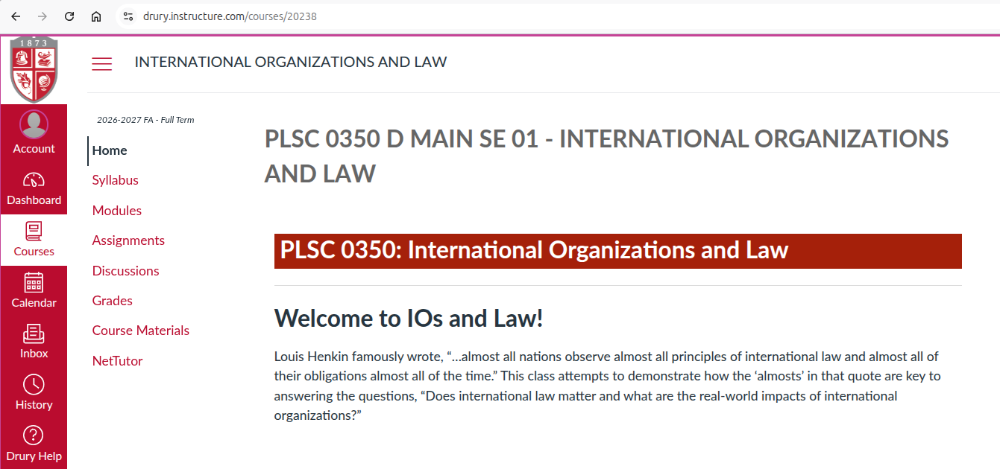
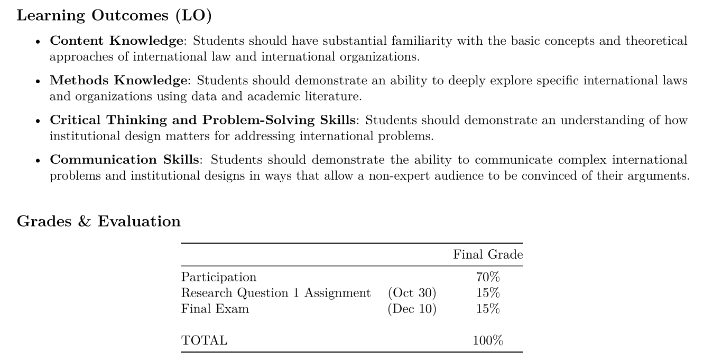
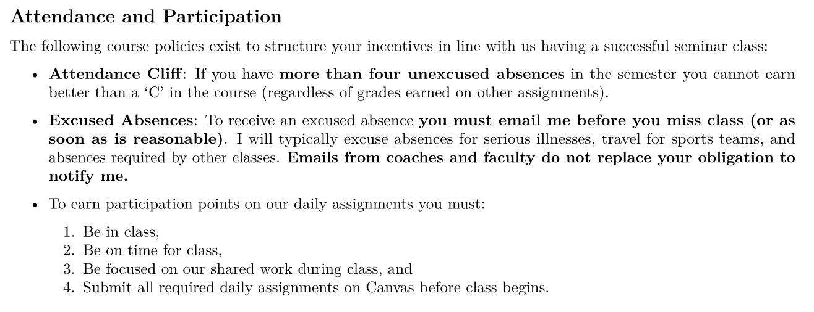
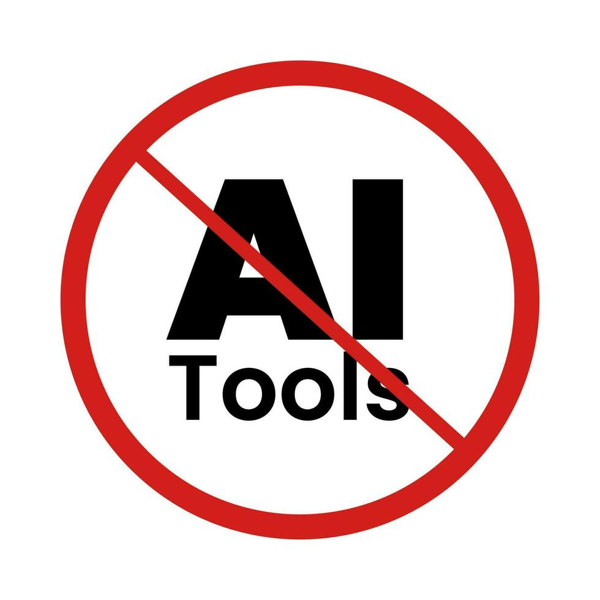
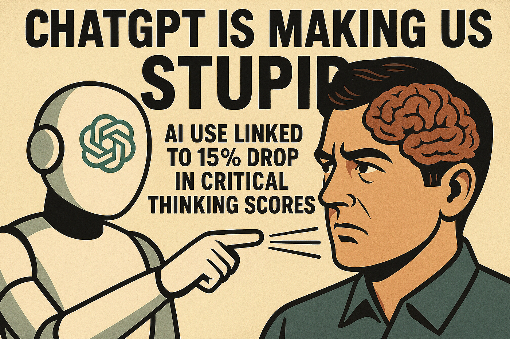
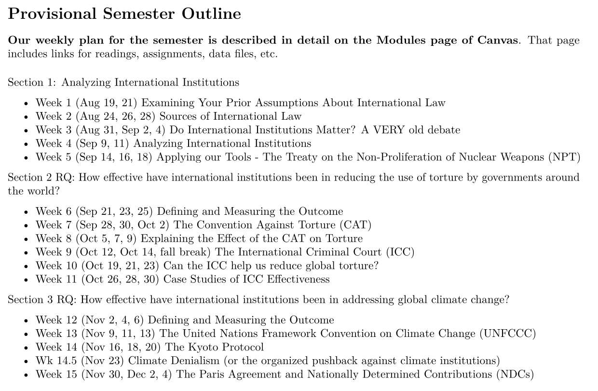

International Organizations and Law (PLSC 350)
Justin Leinaweaver (Fall 2026)
Name
Year in school
Major
“Politics” Defined
Decision-making in a community
How we make and enforce “the rules” (e.g. laws, norms, etc)
Who gets what, when and how?
“International” Defined
‘Inter’ meaning “between” or “among”
‘National’ meaning pertaining to a whole nation, country, people, etc
What is the primary thing your actor wants from the international community?
What is the primary obstacle standing between your actor and their goal above?
What is your actor’s biggest fear from working with the international community?
Generally speaking, how risky is it for your actor to increase its cooperation with international organizations and treaties?
“International law is that law that the wicked do not obey and the righteous do not enforce.”
— Abba Eban (1957)
“International law is to law what professional wrestling is to wrestling.”
— Stephen Budiansky
“…almost all nations observe almost all principles of international law and almost all of their obligations almost all the time.”
— Louis Henkin (1979)






Read chapter 1 in Hathaway and Shapiro (2017)
Canvas Assignment: Let’s start a “legal” war